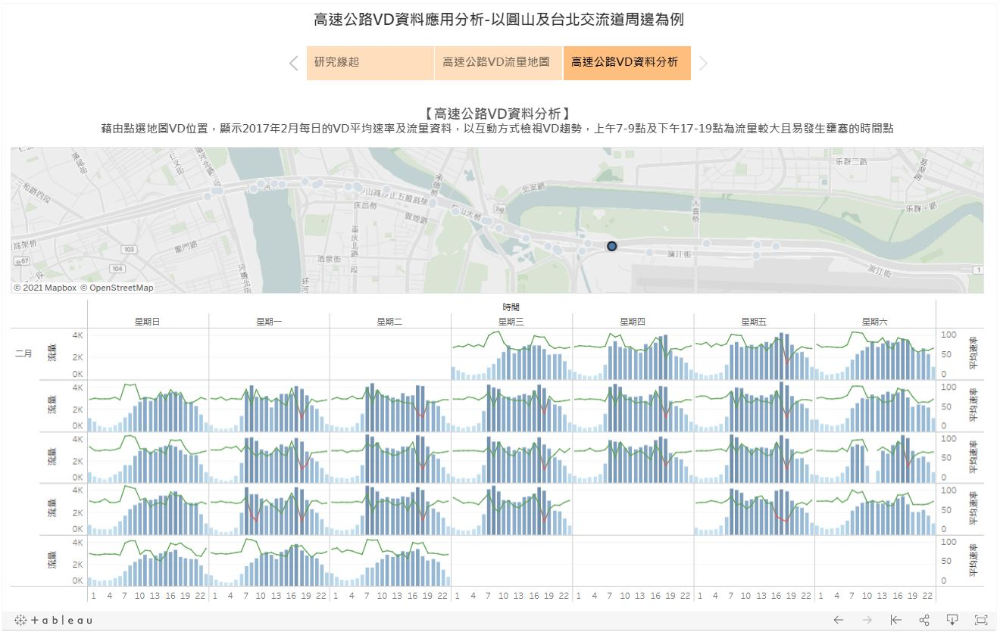
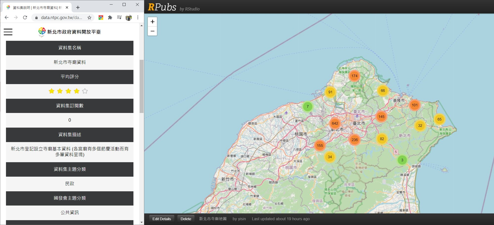
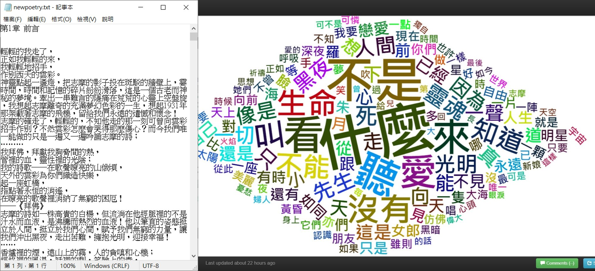
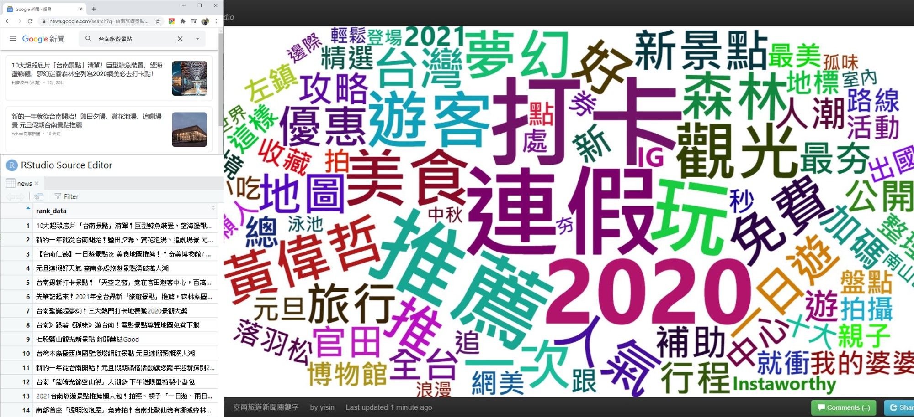

Yisin Chen
陳逸歆-個人簡歷及作品集
ycyigis@gmail.com
ycyigis@gmail.com
網站簡介
本網站為個人資歷介紹以及技術應用之作品集
工作初期為都市計畫領域之規劃師，後轉職到科技公司擔任專案經理，兼任系統及資料分析師。
 SQL
SQL Tableau
Tableau下列作品為利用政府開放資料，進行圖台建置、主題報表分析與視覺化互動網站等不同分析技術應用
使用軟體：ArcGIS Online；分析資料：中央氣象局測站資料
作品簡介：利用中央氣象局公開的測站座標、氣溫資料等，利用ArcGIS Online的故事地圖功能，建置臺灣氣象站的分布圖、熱區圖、溫度分布地圖等。
使用軟體：Tableau；分析資料：交通部高速公路局VD流量資料
作品簡介：使用交通部高速公路局於各VD測站紀錄的流量資料，以每小時交通流量紀錄，分析各測站交通流量的尖峰與離峰小時。
［點選下方圖片開啟互動地圖］
使用軟體：Tableau；分析資料：衛福部傳染病統計資料查詢系統
作品簡介：依衛福部傳染病統計資料查詢系統公告的COVID-19境內外移入確診個案數、年齡性別分布、各縣市的確診人數熱圖以及累計趨勢圖進行分析。

使用軟體：Tableau；分析資料：警政署交通事故統計資料
作品簡介：使用警政署公告之交通事故A1、A2事故資料，以運研所CBI公式進行各縣市歷年的易肇事熱區分布圖。

使用軟體：R；分析資料：新北市政府民政局-新北市寺廟資料
作品簡介：使用新北市政府民政局公告之新北市寺廟資料，以R語言建置空間群聚分布地圖。
［點選下方圖片開啟互動地圖］
使用軟體：R；分析資料：《康橋再會：徐志摩浪漫詩歌精選》
作品簡介：使用文本分析技術，分析徐志摩新詩中的關鍵字文字雲。
［點選下方圖片開啟互動地圖］
使用軟體：R；分析資料：《哈利波特：鳳凰會的密令》
作品簡介：以哈利波特小說第5集內各角色於故事中提及對方作為雙方角色之關聯，做成社會網絡分析互動圖表。
［點選下方圖片開啟互動地圖］

使用軟體：R；分析資料：Google新聞
作品簡介：利用網路爬蟲技術，以［台南旅遊景點］為關鍵字搜尋Google新聞，擷取新聞標題進行關鍵字分析。
［點選下方圖片開啟互動地圖］
